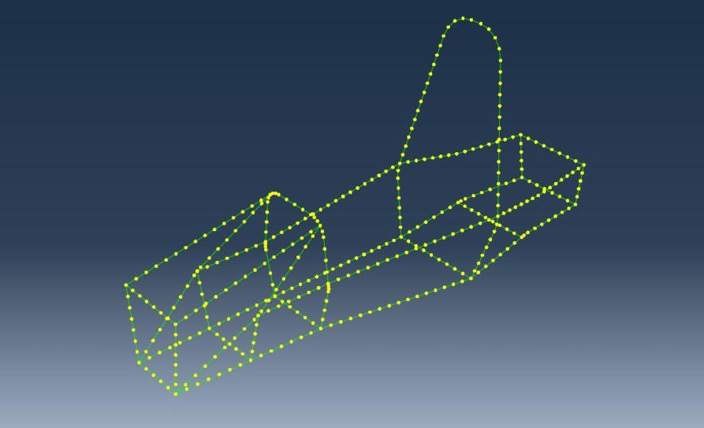
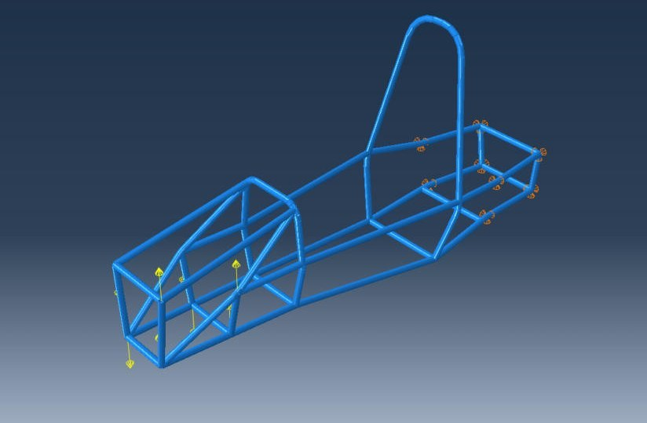
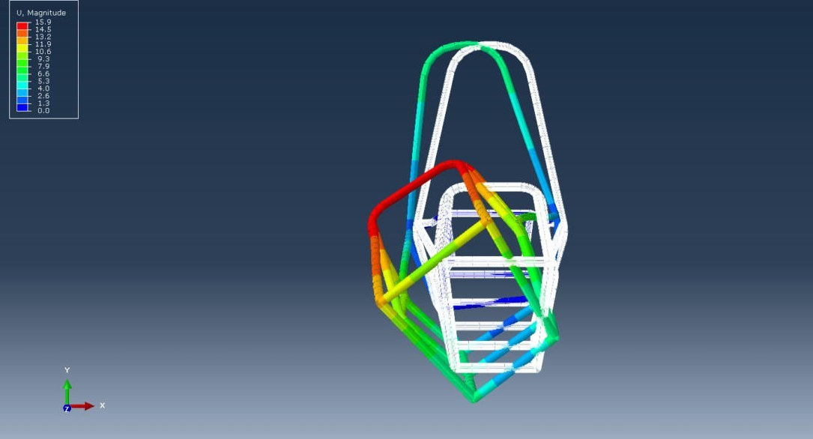
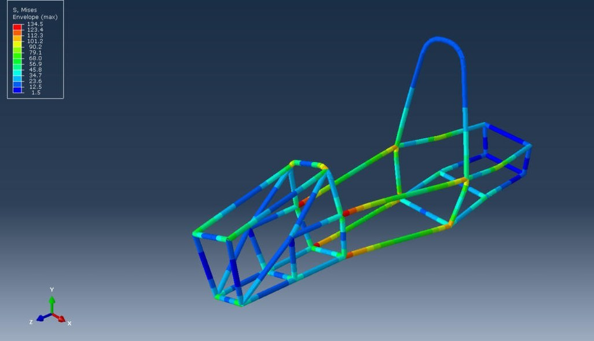
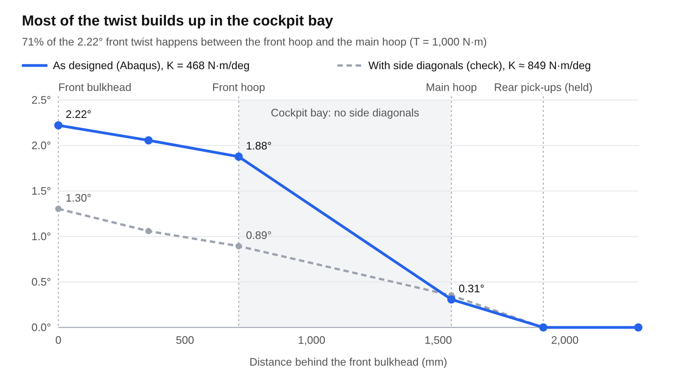

Objective
Find the torsional stiffness of my chassis design, where it is weakest, and what would fix it. A frame that twists changes how the suspension shares load between the wheels, so stiffness matters more here than strength.

Model
I modelled the frame as beams along the tube centrelines, the usual idealisation for a tube space frame. The 62 tube bodies in the STEP file became 86 straight beam segments meeting at 66 joints, meshed with 418 B31 beam elements on a 50 mm seed. Joints are rigid where the centrelines meet. The material is steel with E = 205 GPa; I assumed 4130, but any steel changes the result by under 3%.
Loads and constraints
The set-up copies a torsion rig. The 8 frame nodes at the rear suspension pick-up stations are pinned, and the 8 nodes at the front pick-ups carry a ±750.6 N vertical force couple that adds up to a pure 1,000 N·m torque about the car’s long axis. Twist is averaged over the four left/right pairs of loaded nodes, and stiffness is the torque divided by that twist. The CAD has no suspension hard points, so I used the nearest frame joints.




Results
The front pick-ups rotated 2.14° relative to the rear, a torsional stiffness of 468 N·m/deg. The largest displacement was 15.9 mm at the top of the front hoop. Peak von Mises stress on the tube outer surface was about 170 MPa, in the cockpit rails next to the front hoop. Abaqus’ own beam output samples only a few points on each pipe section and reads 135 MPa, so I computed the outer-surface value from the section forces.




What it means
71% of the twist happens in the cockpit bay. Its sides are open rectangles with no diagonal, so the rails resist the torque by bending instead of carrying it as axial load. At 468 N·m/deg the frame sits in the lower half of the roughly 300–1,000 N·m/deg range quoted for FSAE handling (O’Neill, 2005), and at 36 kg it is heavy for its stiffness.

Adding one side-impact diagonal per side, which FSAE rule F.6.4.6 requires anyway, raises the stiffness to about 850 N·m/deg for 3.2 kg. After that, the twist spreads over the front box and the bay behind the main hoop, so those are the next to triangulate, along with main hoop braces.
Checks and limitations
I solved the same mesh with my own 3D frame solver, which matched Abaqus to 0.08% RMS in displacement. The exact, mesh-free solution gives 469 N·m/deg, so the mesh is converged, and the rear reactions balance the applied torque exactly. The biggest unknown is the pick-up locations, so the next run should use the real suspension hard points. Real welded joints are also more flexible than rigid ones, so a physical rig test would likely read lower than this model.